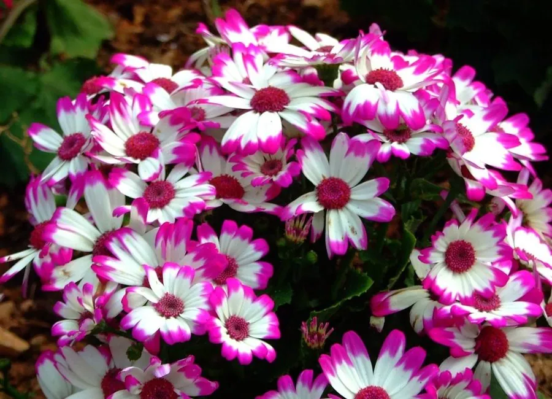

花卉与草本 · 植物界
瓜叶菊 Pericallis × hybrida

菊科多年生草本，叶片大如瓜叶，花团锦簇、色彩繁多，是冬春年宵花市的常见盆花，原产加那利群岛。
- 分类
- 门被子植物门纲木兰纲目菊目科菊科属瓜叶菊属
- 栖息环境
- 加那利群岛的山地林缘，喜凉爽、湿润、明亮散射光
- 地理分布
- 原产加那利群岛，现世界各地广泛盆栽，中国各地年宵花市常见
- 保护级别
- 暂无评估
物种志
瓜叶菊为菊科瓜叶菊属多年生草本，常作一二年生栽培，株高 20–50 厘米，茎直立，全株被短柔毛。叶片大，心形至肾形，边缘有波状锯齿，形似瓜叶。头状花序多数，密集排列成伞房状，花有蓝、紫、粉、红、白等色，花期 12 月至翌年 5 月；果实为瘦果。
瓜叶菊原产非洲西北部的加那利群岛，园艺品种多为杂交选育，喜凉爽、湿润和明亮散射光的环境，不耐高温和强光，是典型的冬春盆花。它花序密集、花色丰富，常被用作年宵花和早春花坛的装饰；栽培以播种为主，夏季高温时植株容易枯萎，需要遮阴降温。瓜叶菊的花期集中在冬春，正好填补了寒冷季节观花植物较少的空档。
形态与习性
- 株高20–50 厘米，全株被短柔毛
- 花期12 月至翌年 5 月，花序密集
- 果期花后结瘦果
- 光照喜明亮散射光，忌强光暴晒
- 水分喜湿润，忌积水
- 土壤疏松肥沃、排水良好的腐殖质土
- 繁殖以播种为主
- 主要用途年宵花、冬春盆栽、花坛布置
趣味知识
- 瓜叶菊的叶片大而心形，形似瓜叶，因此得名。
- 它的头状花序密集排列成伞房状，一盆可开数十朵花。
- 瓜叶菊喜凉爽怕高温，夏季高温时容易枯萎，需要遮阴降温。
- 它是冬春年宵花市的常见盆花，花色从蓝紫到纯白都有。